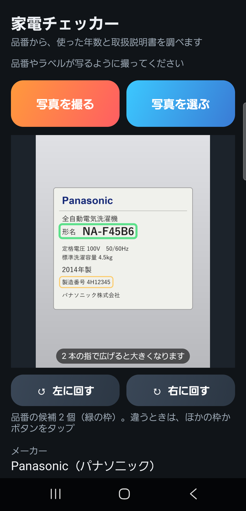
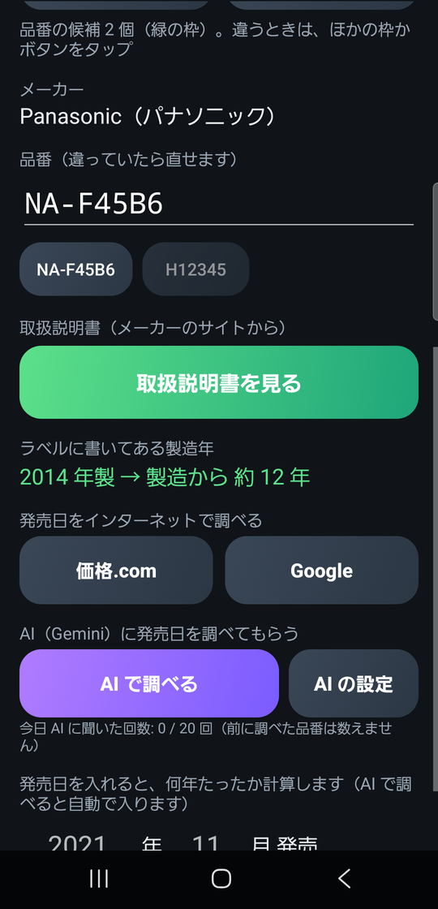

家電チェッカー Android 版 使い方マニュアル
（アプリの版: Android 版 v8 2026-11-03 作成）

ホーム画面のアイコン
家電チェッカーは、家電の品番のラベルの写真や品番から、
- その家電の発売日と、発売から何年たったか
- メーカーのサイトにある取扱説明書（PDF）
を調べる Android のアプリです。
- 写真の字は、スマホの中で読み取ります。発売日を探すときに、AI（Google の Gemini）を使えます。
- 写真の中のラベルは、説明のために作った見本です。
もくじ
- アプリを入れる
- 写真を撮る・選ぶ
- 品番を決める
- 取扱説明書を見る
- 発売日を調べる（AI・価格.com・Google）
- 発売日と使った年数
- AI の設定（API キー）
- 困ったときは
1. アプリを入れる
このアプリは Google Play（アプリのお店）には出していません。
アプリのファイル（KadenAge_v8.apk）をスマホに入れて、自分でインストールします。
- APK のファイルを、LINE・メール・Google ドライブなどでスマホに送ります。
- スマホで KadenAge_v8.apk をタップします。
- 「このソースからのアプリのインストールは許可されていません」のような表示が出たら、「設定」→「この提供元のアプリを許可」を ON にして、前の画面に戻ります。
- 「インストール」（前の版が入っているときは「更新」）を押します。
- 「Play プロテクト」の注意が出たら、「詳細」→「インストールする」を選びます。
- ホーム画面に「家電チェッカー」のアイコンが出れば完了です。
- くわしくは、ホームページの「APK の入れ方」（https://chocorin0000.github.io/manual/apk-install/）を見てください。
2. 写真を撮る・選ぶ

ラベルの写真を入れたところ
- 「写真を撮る」（カメラが開く）または「写真を選ぶ」（写真の中から選ぶ）を押します。
- 家電の品番のラベルを撮ります。
- ラベルは、本体の横・後ろ・扉の内側・底などに貼ってあります。
- 近づいて、字がはっきり読めるように撮ってください。
- 写真が出ると、スマホが写真の中の字を読み取り、品番らしい字に枠をつけます（数秒）。
- 緑の枠: 品番として使っている字
- 黄色の枠: ほかの品番の候補
写真の操作
| すること |
やり方 |
| 大きくする |
写真の上で 2 本の指を広げる |
| 向きを直す |
「↺ 左に回す」「↻ 右に回す」（横向きに撮った写真など） |
3. 品番を決める

写真の下（メーカー・品番・製造年）
写真の下には、読み取った結果が出ます。
| 出るもの |
意味 |
| メーカー |
ラベルから分かったメーカー（例: Panasonic（パナソニック）） |
| 品番（違っていたら直せます） |
調べる品番。手で直したり、入れたりできます |
| 候補のボタン |
ほかの品番の候補。押すと、その字が品番の欄に入る |
| ラベルに書いてある製造年 |
「2014 年製 → 製造から 約 12 年」のように出る |
- 品番がちがうときは、写真の中のほかの枠をタップするか、候補のボタンを押します。
- 写真がなくても、品番の欄に品番を入れれば調べられます。
- いちばん下の「▶ 読み取った文字を全部見る」で、写真から読めた字を全部見られます。
4. 取扱説明書を見る
- 品番が入っている状態で「取扱説明書を見る」を押します。
- メーカーのサイトで探して、見つかると PDF が開きます。
- 説明書が 2 つ以上あるとき（取扱説明書・据付説明書など）は、「どれを見ますか？」と聞いてくるので選びます。
- 開いた PDF は、PDF を見るアプリの共有のボタンなどで、保存したり送ったりできます。
- 戻ると、ボタンの下に「パナソニック NA-F45B6 全自動洗濯機」「パナソニックのサイトの発売日: 2012年12月」のように出ます。発売日の欄が空なら、自動で入ります。
直接たどれるメーカー
- パナソニック・シャープ・日立・東芝・ソニー・象印は、メーカーのサイトから直接 PDF を探します。
- それ以外のメーカーや、見つからないときは、アプリの中の探す画面（Google の検索）が開きます。説明書の PDF をタップすると、すぐ開きます。
5. 発売日を調べる（AI・価格.com・Google）
AI で調べる
- 「AI で調べる」を押します。
- AI（Gemini）が写真を見て品番やメーカーを読み、価格.com で発売日を探します（10 秒くらい）。
- 「2012 年 12 月 発売」と商品の名前が出て、下の発売日の欄にも自動で入ります。
- 「▶ 価格.com のページで確かめる」で、価格.com のページが開きます。
- 前に調べたことのある品番は、AI に聞かずに覚えている答えを出します（「※ 前に調べた結果です」）。
AI の答えはまちがうこともあります。大事なときは価格.com やメーカーのページで確かめてください。
AI に聞けるのは1 日 20 回までです（使いすぎ防止。前に調べた品番は数えません）。「今日 AI に聞いた回数」で分かります。
自分で調べる
- 「価格.com」: 品番で価格.com を検索します。
- 「Google」: 品番で Google を検索します。
6. 発売日と使った年数
- 発売日の欄（年・月）に発売日が入ると、その下に「発売から ◯ 年 ◯ か月」と出ます。
- 発売日が分かっているときは、自分で年と月を入れても計算します。月が分からないときは、年だけ入れると「発売から 約 ◯ 年」と出ます。
- ラベルに製造年が書いてあれば、「ラベルに書いてある製造年」にも「製造から 約 ◯ 年」と出ます。
家電は、だいたい 7〜10 年くらいで買い替えを考える時期といわれます（メーカーが修理用の部品を持っている期間も、製造をやめてから 6〜9 年くらいのものが多いです）。買い替えや修理を考えるときの目安にしてください。
7. AI の設定（API キー）
「AI で調べる」を使うには、Gemini の API キーを一度だけ入れます。
- パソコンかスマホで Google AI Studio（https://aistudio.google.com/）を開き、Google アカウントでログインして、API キーを作ります（無料）。
- 作ったキーをコピーします。
- アプリの「AI の設定」を押します。
- 「キーを作るページ」を押すと、キーを作るページが開きます。
- 入れる欄に API キーを貼り付けて「保存」。
- キーは、このスマホの中だけに保存します。画面には、はじめと終わりの 4 文字だけが出ます。
- キーを消したいときは「AI の設定」→「キーを消す」。
- API キーは人に教えないでください。
- 写真つきのくわしい作り方と、あとから見直す方法は、「Gemini の API キーと GAS の準備マニュアル」（https://chocorin0000.github.io/manual/keys-gas/）の 2 章・3 章にあります。
8. 困ったときは
| こんなとき |
どうする |
| 「品番らしい文字が見つかりませんでした」 |
ラベルに近づいて、明るいところで撮り直す。「↺ ↻」で向きを直す。「AI で調べる」で AI に写真を見てもらう |
| ちがう字が品番になった |
写真の中のほかの枠をタップする。候補のボタンを押す。品番の欄を手で直す |
| 「品番を入れてください」 |
写真を入れるか、品番の欄に品番を入れる |
| 「AI で調べる」で API キーの画面が出る |
「7.」で API キーを入れる |
| 「今日は 20 回使いました。明日また使えます」 |
次の日にもう一度。「価格.com」「Google」のボタンで自分で調べる |
| 発売日が見つからない |
価格.com に出ていない古い家電などです。「取扱説明書を見る」でメーカーの発売日が分かることもあります |
| 取扱説明書が見つからない |
品番が正しいか確かめる。探す画面（Google の検索）で探す |
| 「ダウンロードできませんでした」 |
電波のよいところで、もう一度押す |